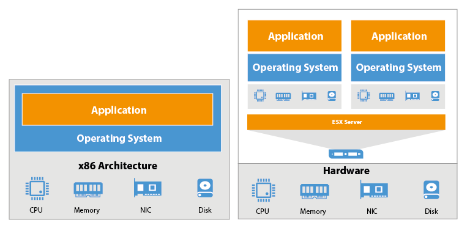

class: center, middle ## An OCIO Digital Literacy Course<BR>_DevOps For Product Owners_ ### <img src="images/cc_logo_final_blue_rgb.jpg" alt="Cloud Compass Computing, Inc." width="25%" > Stephen Curran, Cloud Compass Computing, Inc. .footnote[This work is licensed to the public under a Creative Commons Attribution 4.0 license. To view a copy of this license, visit http://creativecommons.org/licenses/by/4.0/.] --- # DevOps For Product Owners ## Part 1: The Big Questions 1. Introductions 1. What is DevOps? 2. Why is DevOps? 3. Why does it matter me? --- # Approach The course will be completed over two sessions covering a mixture of presentation, lab work and most importantly, discussion. Please, jump in at a time with questions, comments, suggestions, snorts, etc. The goal is the material is presented in _your_ context. -- There will be a couple of labs that will allow you to say - *_I done DevOps_* -- Logistics... -- * Any constraints on time? * Washrooms * Food and beverages --- count:false #Introduction .red[Exercise] Process: * On go - head to a corner - even number in each * Take turns answering a question on the screen and discuss * 3 minutes - end of round * Go to another corner and meet new people * One person stays, the others go * Repeat x3 -- Trick - meet .green[EVERYONE] ??? http://www.liberatingstructures.com/2-impromptu-networking/ --- count:false class:center,middle ## Why do you love technology? --- count:false class:center,middle ## Why are you hindered by technology? --- count:false class:center,middle ## Why are you (not) excited about your project? --- #Introductions .left-column[ ###Who are you? * Project * Role * Digital Services experience? * Please write your name ] .right-column[ ###Are you/Have you: * the key technical player on a project? * the key business player on a technology project? * a core member of a technology project? * a user providing requirements/doing pre-release testing of an app? * used a custom government applications? * used Outlook, Word and Excel? * don't use a computer? ] .left-column[] -- ### Me * I walk the line - business and technology * Agile/DevOps Development Leader/Mentor * DevOps since before it was DevOps * BC Government Projects ICM, JAG and<br>MOTI - _School Bus_ and _Hired Equipment_ ??? Digital Services - Service Design, Agile * Software Development Management – Application Delivery * Biggest – US Federal Government HR System – Avue Central * Classification, Pay Grades, Recruiting, Performance Management * 2.5M Job Applications per year * Entry Hiring for Dept. of Justice Lawyers, Capital Police Officers * Forest Service annual Fire Hire * Crazy management * BC Government – ICM, PMO, Courts Projects * Pathfinder Projects - School Bus, Hired Equipment --- # What is DevOps? -- DevOps (a clipped compound of "software DEVelopment" and "information technology OPerationS") is a term used to refer to a set of practices that emphasize the collaboration and communication of both software developers and information technology (IT) professionals while automating the process of software delivery and infrastructure changes. It aims at establishing a culture and environment where building, testing, and releasing software can happen rapidly, frequently, and more reliably. .red.bold[*] .footnote[.red.bold[*] Wikipedia] -- ###Well, that doesn't help much... ??? DevOps - not a straight forward "product"/"thing" * Name of a conference presentation * Cultural component - improving communications and shared goals * Lean component - continuous improvement * Automation and tools So lets hold off on "What is it" and go to... --- # Why is DevOps? ### Roots - merging Developers and Operations work * Devs - make the code * User Interface (UI/UX) * Business Logic/Rules * Integrations * Database (usually) -- * Ops - runs the code * Servers * Networks * Databases -- NOTE: DevOps is Development Methodology agnostic, but Agile requires DevOps. --- # Backup a bit - what's an app? .right-column[<img style="height:110%;" src="images/webarchitecture.png">] -- .left-column[ ## Examples * .NET + front end + database * Java + front end + database * MEAN (Mongo Express Angular Node) * Django (Python + front end + database * Front End: Bootstrap, React, Backbone, Angular, etc. * Database: Postgres, SQL Server, Oracle, Mongo ] -- User Stories, usability, logic, rules... --- # Where does an app run? .right-column[<img width="90%" src="images/netarchitecture.png">] -- .left-column[ ## Ops View * Networking zones * URLs - _https://myapp.gov.bc.ca_ * Authentication - siteminder * Encryption - SSL * Firewalls * Servers * Storage ] --- #The Building Blocks: Server to Data Centre .left-column[ <img src="images/1userver.jpg" alt="1U Server" width="80%" > ] -- .left-column[  .center[Physical vs. Virtual Machines (VMs)] ] -- .right-column[ <img src="images/googleracks.jpg" alt="Racks" width="60%" > ] -- .right-column[ <img src="images/GoogleDataCentre.png" alt="Data Center" width="90%" > ] ??? * Compute * Disk * Network - connectivity - everything disconnected - explicit action to emable connectivity --- #Networking and Security - pre-Cloud <img src="images/networkzones.gif" alt="Network Zones" width="50%" > -- ####Times 3 - Dev, Test, Prod -- ####Times every Ministry ??? --- # Our App maps onto the Network .left-column[ <img src="images/networkzones.gif" alt="Network Zones" width="60%" > <img src="images/netarchitecture.png" alt="Canonical Web Architecture - Ops View" width="50%" > ] -- .right-column[ * Configure/secure URL - Siteminder setup * Procure Compute and Storage * Request servers - iStores * Physical Servers * VMs - Virtual Machines * Placement in proper Zone (VLAN) * Configure Software servers * Install application - when ready * Establish Connectivity * Request firewall updates - iStores * Configure software connections * Changes to compute/network? - iStores ] ??? Firewall config changes per app --- #The iStore Impact * Tracked - barely * Per ministry solutions for tracking assets (beyond billing) * Money/Time Optimizations * Setup environment once * Reuse for many small applications * Creates dependencies between unrelated apps * Forces technology decisions - lock in * Changes are "difficult" * Anything needing an iStore is slow - weeks to months * "Innovative" adjustments * Overprovision big environments * Design for the heaviest anticipated load --- # Making it Work - Theory <img src="images/sdlc_waterfall_model.jpg" alt="Waterfall Design" width="65%" > Meetings, documents, agreements and requests ??? Note - this is just like software development/test But this is just about deployment In government - sometimes not obvious to the developers that this needs to be done --- # Reality .right-column[<img src="images/sdlc_waterfall_model.jpg" alt="Waterfall Design" width="120%" >] -- * Requirements: .bold[_change_] -- * Implementation: .bold[_takes too long_] * Devs: Code Development * Ops: Procure/Setup Servers -- * Testing: .bold[_get skipped_] -- * As a result, deployment is... -- ## ... .bold[_Feared_] --- # What Ginger Hears... -- .left-column[<img src="images/WhatDevsSee.png" alt="What Devs See" width="90%" >] -- .right-column[<img src="images/WhatOpsSee.png" alt="What Ops See" width="92%" >] ??? Not Surprising and no one's fault * Devs - 100% of functionality, end user requirements, changes * Ops - 100 other apps to manage, production issues * It's not obvious what's needed * It's really hard to get budget if you can define exactly the benefit --- # Deployment ### The rubber hits the road and... -- #### ...up pops *_The Wall of Confusion_* .center[<img src="images/overthewall.png" alt="Over the Wall of Confusion" height="350" >] --- # What goes wrong? ###Ineffective Communications Communication is via Word documents - the dreaded .red[_Release Guide_] * Premise: To deploy this app, do this...and this...and this...then this... * Assumption: The writer knows the readers world...impossible -- ###Impact: * Steps are performed manually * On-the-fly compensations are made...further invalidating the assumption * On Dev, Test and Prod ??? * Example - doing home PC support - remotely * Example - assume a piece of software is present - missing, so add it on Test. --- # What goes wrong? ###Inconsistent Environments * Developers develop in their world, deliver to a different one * Each Dev creates their own development/test capability * Execution environment doesn't match production * Minimal test data * Periodically delivers code - usually at a milestone - e.g. UAT * Agile _should_ fix that * Test data doesn't match production -- ###Impact: * It works on my machine! ??? * On first delivery try - may or may not work * Performance must be acceptable * But volume of data not considered * Options: * Get the data * Other mitigation strategies --- # What goes wrong? ###Unnecessary Dependencies * The _iStore_ optimization * iStores/funding force optimizations on time and cost * Method: Few servers, shared resources -- ###Impact: * Unwanted dependencies between apps * Coordination of multple apps because of shared dependencies * Outages of an app because of an upgrade to another * The Release Party: multiple businesses invovled in one release --- # All of which leads to... -- # The Day After .center[<img src="images/dayafter.jpg" alt="The Day After" width="75%" >] .footnote[CCredit: Twentieth Century Fox - _The Day After_] ??? * Users can't log in * Performance is terrible * A feature no longer works * Bugs occur * Non-Functional Requirements * Performance * Monitoring * Logging * Capacity A day - or several - fixing things ??? * Often the issues are minor and easily fixed * Rare that something unexpected and huge hits --- # The Reflex Response * We are doing it right, we just need to do it .red[*better*] next time * Test more - take longer, check _EVERYTHING_ * For now,though... .red.bold[DON'T CHANGE ANYTHING!!] -- * Except - the users still want more fixes/capabilities -- <img src="images/WallOfConfusionChange.png" alt="The Wall of Confusion - Change" width="53%" > ??? * Checklists are really popular for this * The checklists grow continuously as more scenarios are found --- # It's a little worse in Government .right-column[ <img src="http://www2.gov.bc.ca/assets/gov/home/gov3_bc_logo.png" alt="BC Government Logo" width="50%" >] .left-column[ * Each application is a project - an event * Not a product with a lifecycle * Focus is on the app, not the long term * Contracted teams * Each starts with own approach & tools * Highly variable contact with Ops * Improvements are local (team) * Ops employees * Work with many teams...they come and go * Limited access to data * Production-type data * Production data volumes ] ??? * Example Local Change: Generate the Release Guide --- # So...What is DevOps? A culture of applying .bold[Lean principles] to the .bold[end to end] systems: -- .bold.blue[_Maximize value; minimize waste_] <img src="images/leanprocess.png" alt="Lean Process - Continuous Improvement" width="55%" > -- ...using some really .bold[powerful tools] ??? Building on the shoulders of giants - continuously ??? Open source is huge here - big companies collaborating on powerful tools --- # Analogous to Agile And to some extent, driven by agile... <img src="images/Manifesto for Agile Software Development.png" alt="Agile Manifesto" width="75%" > .footnote[.red.bold[*] The Agile Manifesto - http://agilemanifesto.org/] ??? Why driven? - agile requires frequent releases vs. waterfall "one-time" release events - too painful to deploy without automation * Working software - not Release Guides * Customer - is each other dev <--> ops ??? Let's talk about solutions to the common challenges --- # Problem: The Release Guide * Old/Miserable: Write It in Word - every step (example: ICM) <img src="images/ReleaseGuideTOC.png" alt="Release Guide Table of Contents" width="45%" > -- * Better: Write it as a repeatable script * Not easy - done incrementally - by lazy programmers * ...in isolation -- * Even Better: Create and share tools to improve each step ??? Example - ICM - 24-48 hours of orchestrated activities - 10 people in a room Common - developers best effort WARNING: COTS Software - especially from early 2000s --- name: pipeline # Solution: The Deployment Pipeline <img src="images/continuous-deployment-pipeline.png" alt="Deployment Pipeline" width="80%" > * Subversion, git, github - manage code * Maven, grunt - build tools * xUnit - unit test tools * Selenium, Jmeter - integration test tools * Migrations, Datical, E-F - database upgrades * Jenkins - Continuous Integration, job runner * Connected via triggers --- #Lab - Deploying an App .bold[Scenario] To Do Web App * Version control - github * Architecture - typical Web App .bold[Task] Deploy Application --- count:false #Scenario: The Day After Emergency You launched a brand new To Do app for your organization last night. * http://lab-student1-lab.apps.cloudcompass.ca/#!/ Went to bed really happy - everyone liked it. -- Got up this morning. The DM called - the Minister says the app is .red[sad]. Too .red[sad]. It needs to be .green.bold[AWESOME]!! * Change the title * Change the wording in the text box ##Hurry!!! --- count:false #Old way - * A real release will take all day, so... * Get on production and FIX IT! -- count:false #The DevOps way * The processes are in place * The change is easy, and easy to test * Do a release. The .green[right] way. --- count:false ##Instructions: # #.center[https://goo.gl/mU54BQ] # * Github user: c3ilabs * Github password (shhhh....): lab-mar-02 .red[NOTE]: Passwords may have the number "1", but don't have the letters "l" or "I" --- # What we learned * Automated deployment is possible * Non-Technical people can do it * There are lots of moving pieces * Lots to do if the steps are manual <img src="images/continuous-deployment-pipeline.png" alt="Deployment Pipeline" width="45%" > -- ### What we glossed over... * Setup - Developer and Environments * Testing * Promotions - going to Test and Production * Documentation ??? Most - inherent and documented in the process Integrations - Siteminder, APIs within the government Documentation - Issue Tracking, Wiki/Confluence Documentation - Automatic - side effect of the process --- count:false template: pipeline ??? Back to challenges and solutions --- # So Many Tools... <img src="images/XebiaLabsPeriodicTableDevOps.png" alt="Periodic Table of DevOps" width="90%" > .footnote[Credit - Xebia Labs - https://xebialabs.com/periodic-table-of-devops-tools/] --- # Problem: The Day After -- ### Traditional: Testing V <img src="images/traditional_v.png" alt="Traditional V Testing" width="59%" > ??? * Unit Testing * Integration Testing * Systems Integration Testing * System Testing * Acceptance Testing * Operational Testing - does it work live? --- # Problem: The Day After ### Solution: Test (and deploy) Early and Often - "_Shift Left_" <img src="images/Agile_DevOps_Shift_Left_Testing.jpg" alt="Shift Left - Agile and DevOps" width="60%" > ??? The first production deploy should NEVER be the day before go live!!! Verification of standards - database, security, look and feel, etc., etc. ??? * Continuous Integration * Example: PCSS - 250 Releases in < 3 years - about once weeks * Example: CCSS, School Bus - deployment well before production, usage * Non-functional requirements - real data in real production - controlled * Benefit - users see the data in THEIR context - not test data Risk Mitigation --- # Problem: The Day After ### Solution: Really Fast Releases -- .right-column[<img src="images/lessthan30minutes.png" alt="Less than 30 minute releases" width="65%" >] .left-column[ Done _properly_ - aka "Roll-forward" 1. Issue found 2. Issue documented - e.g. JIRA entered 3. Issue investigated 4. Issue fixed, checked in 5. Build / Deploy 6. Verify fix 7. Deploy to Test 8. Verify 9. Deploy To Production...phewwww!!! ] ??? Traditional approach - 1, 3, and fix in production --- # Problem: Change is Bad ### Solution: Frequent, Small Releases -- <img src="images/ReleasePainSpiral.png" alt="Release pain spiral" width="35%" > .footnote[Credit: Spotify Engineering Culture - https://labs.spotify.com/2014/03/27/spotify-engineering-culture-part-1/] ####Big Release - Big Risk - many things to break - hard to fix<br>Small Release - Small Risk - only a few things to break - easy to fix ??? * Spotify!!! * This applies to Dev (every change), Test (regularly) and Prod (when Business wants) * Planning out a release - all the things to include vs. Facebook releases * ICM vs. CCD * Launching of a Rocket vs. Driving to work - adapt --- # Problem: Works on my System! -- ### Solution: Consistent Environments .right-column[<img src="images/Pets-Cattle-2.png" alt="Pets vs. Cattle" width="100%" >] .left-column[] #####Tools to enable consistency * Ansible, Puppet, Chef - server setup tools * Subversion, git, github - configuration as code * Chaos Monkey - "no pets" verification -- #####Tools so Dev = Production * Vagrant - VMs * Docker - Containers .blue[Open source licensing _REALLY_ helps here] ??? Home PC vs. work PC analogy Home PC you buy and own for years Work PC you get, use, break and replace In fact - there is a good argument to make home PCs the same --- # Problem: Unnecessary Dependencies -- ### Solution: Stop it!! -- .right-column[<img src="images/DecoupledReleases.png" alt="Decoupled Releases" width="100%" >] .left-column[] -- Fake Dependencies * Enterprise Release Scheduling - don't!! * Eliminate artificial deadlines * Dependencies on people * Dependencies on products/licenses -- Architectural Dependencies * Isolate apps / parts of apps * Different servers ($$$) * Docker, etc. * Don't share databases * But don't duplicate data - use APIs --- # So...what is DevOps? * A culture of continuous improvement as it relates to the _end to end_ delivery of systems * ...supported by a growing (and standardizing) set of automation tools -- .right-column[<img src="images/The-Phoenix-Project.jpg" alt="Decoupled Releases" width="80%" >] .left-column[] -- ### The Three Ways * Systems Thinking * Focus on impacts to the _entire_ system * Create Feedback Loops * Verify your assumptions/theories * Continual Experimentation and Learning --- # Are we doing DevOps?? .left-column[ ### Anti-Patterns * Little/no version control * Devs environments not like Prod * "Agile" but no DevOps * Cross Project Release Schedules * Many manual steps (Release guide) * Post-deployment fixes without Deploys * Multi-app Release Party Email Chains * Server Names - pets (vs. _Services_) * Test Date = Start UAT Date - 1 Day * Production Date = Go Live Date - 1 Day * Day After Syndrome - it hurts! ] -- .right-column[ ### Patterns * Version control for everything * Devs world ~= Prod * Many, many, many deployments * Support Agile * Automatic deploy to Dev * Triggered deploy to Test, Prod * No manual steps - _database_ * Early and often to test, prod * Automatic feedback and notifications * App independence * Day After is just like the Day Before ] ??? * Editorial comment - legacy systems are considered "exempt" because of the perceived lack of tools. * Challenge that and see if there are things that can be done * When things go bad on a release - have a meeting and have someone find a better way. * Better than a "better checklist" * What can be done to remove manual steps things? To speed things up? To make things repeatable? * Verify databases - test and prod are the same - automate the checking process * Verify environments - test and prod are in sync - automate the checking process * All database changes are scripts - nothing manual. * Runner for scripts --- #Why is it important to me? -- ###A .green.bold[culture] of continuous improvement as it relates to the .bold[end to end] delivery of systems .bold[Everyone's] role: fostering the right culture on the team. It's .bold[your] application. --- ###Starting Place: Transperancy and Visibility ##Knowing what's happening on the technical side * How often are we deploying? * What is the manual effort? * How soon can we deploy to Test? to Prod? * What is the risk? * Is there a way to mitigate that risk? * How much testing is happening? * What are the dependencies? * Are things improving? --- # Summary .left-column[ * Architecture * Developing/Managing Code * Version Control * Github * Open Source * Issue Tracking * Environments * Servers * Networks * Storage * Security ] .right-column[ * Continuous Integration / Continuous Delivery (CI/CD) * Build * Test * Deploy * Verify * Monitor * Visualizing it all ] ??? Side note - many big companies do devops as a means not an end As such - willing to share - and get contributions from others - e.g. google, netflix, etsy, docker, etc. --- count:false #End of Part 1 # #Course Feedback: https://goo.gl/6qb4yl # ###References list for those interested in learning more --- class: center, middle ## An OCIO Digital Literacy Course<BR>_DevOps For Product Owners_ ### Part 2: In The Clouds, On The Ground <img src="images/cc_logo_final_blue_rgb.jpg" alt="Cloud Compass Computing, Inc." width="25%" > Stephen Curran, Cloud Compass Computing, Inc.<br><font size="2"><a href="http://htmlpreview.github.io/?https://github.com/swcurran/DevOpsForProductOwners/blob/master/presentation/devops4productownersP2.md.html" alt="Online Version">View Online</a> ● <a href="https://github.com/swcurran/DevOpsForProductOwners/raw/master/presentation/devops4productownersP2.pdf" alt="PDF Version">Download the PDF</a></font> .footnote[This work is licensed to the public under a Creative Commons Attribution 4.0 license. To view a copy of this license, visit http://creativecommons.org/licenses/by/4.0/.] --- # DevOps For Product Owners ## Part 2: In The Clouds, On The Ground 1. Review of Part 1 2. To The Cloud: Models and Options 3. On the Ground: Extending the Pipeline 4. Wrapup: An Application Health Check ??? http://www.liberatingstructures.com/ --- #Part 1 Review .left-column[ * Traditional approaches lead to deployment challenges * Processes reliant on: * People * Paper * Manual Steps * Evolution historically via increased rigour, fewer releases * ...but resulting in higher risks - not lower ] .right-column[ <img src="images/ReleasePainSpiral.png" alt="Release Pain Spiral" width="70%" > ] ??? * Release Guides * Inconsistent environments * Unnecessary Dependencies * Longer periods between releases --- #DevOps * The application of Lean Principles across the end-to-end system * A culture of continuous improvement * ...based on a the build up of powerful tools * Processes reliant on: * Standardization * Automation * Events (triggers) and notifications * Building up to a deployment pipeline * Repeatable * Robust <img src="images/continuous-deployment-pipeline.png" alt="Deployment Pipeline" width="60%" > --- # Enabling us to reduce risk by "Shifting Left" <img src="images/Agile_DevOps_Shift_Left_Testing.jpg" alt="Shift Left" width="70%" > ??? * Team approach - all members * A willingness to find/fix root causes * End to end - idea to production * Powered by open source software --- # Are we doing DevOps?? .left-column[ ### Anti-Patterns * Little/no version control * Devs environments not like Prod * "Agile" but no DevOps * Cross Project Release Schedules * Many manual steps (Release guide) * Post-deployment fixes without Deploys * Multi-app Release Party Email Chains * Server Names - pets (vs. _Services_) * Test Date = Start UAT Date - 1 Day * Production Date = Go Live Date - 1 Day * Day After Syndrome - it hurts! ] -- .right-column[ ### Patterns * Version control for everything * Devs world ~= Prod * Many, many, many deployments * Support Agile * Automatic deploy to Dev * Triggered deploy to Test, Prod * No manual steps - _database_ * Early and often to test, prod * Automatic feedback and notifications * App independence * Day After is just like the Day Before ] ??? * Editorial comment - legacy systems are considered "exempt" because of the perceived lack of tools. * Challenge that and see if there are things that can be done * When things go bad on a release - have a meeting and have someone find a better way. * Better than a "better checklist" * What can be done to remove manual steps things? To speed things up? To make things repeatable? * Verify databases - test and prod are the same - automate the checking process * Verify environments - test and prod are in sync - automate the checking process * All database changes are scripts - nothing manual. * Runner for scripts --- # What is the Cloud? * The "Cloud" is the promise of the future * Everybody says so * What does that mean? * Often discussed at the same time as DevOps - "Let's just run it in the Cloud" * What's the connection? <img src="images/GoogleDataCentre.png" alt="Data Center" width="55%" > --- # The Cloud Models: * as a Service Once you aren't using your computer for computing purposes - you are using the Cloud * Dropbox / Google Drive - File Storage Service * Office 365 / Google Docs - Office Editing Service * Netflix / CraveTV - Video Entertainment Service * Sharepoint / Shared Drives - Business Storage Since all gov't apps aren't on our computers - they are by definition "in the Cloud" So let's talk * as a Service - IaaS, PaaS, SaaS (but not much about SaaS) --- # The Cloud Models: * as a Service -- <img src="images/pizza.jpg" alt="Pizza as a Service" width="65%" > --- # On-Premise, IaaS, PaaS, SaaS <img src="images/cloud.png" alt="Everything as a Service" width="90%" > --- # Cloud Service Providers * HPAS - BC Government Data Centre * Amazon Web Services (AWS) * Microsoft Azure * Salesforce * Others - IBM, Digital Ocean, etc. --- # HPAS Services / BC Gov't Data Centres .right-column[<img src="images/cloud-OnPremise.png" alt="On Premise Infrastructure" width="40%" >] .left-column[] * On-premise-ish, with iStore orders * Physical and VM servers * Networking via VLANs and Firewall changes * Standard images - Windows, Linux * Standard software - e.g. Oracle, .NET * No containers (Docker) * Extra services - patching, monitoring * Backups and restores * .red[New!] IaaS-ish Offering * .red[New!] PaaS Offering - Red Hat's OpenShift --- # IaaS .bold.red[*] AWS (Amazon), Azure .footnote[.bold.red[*] And a lot more services...] .right-column[<img src="images/cloud-IaaS.png" alt="Infrastructure as a Service" width="50%" >] .left-column[] * Now in Canada * Procurement: website, credit card * By use billing - minute and gigabyte * Spin up servers, configure storage/network * Website * Configuration script * API - programmable - this is .bold.red[HUGE] * Resilency - multiple regions (data centres) * Hosting expertise - outage responses * Ground up design to be automated --- ## PaaS: HPAS OpenShift, AWS, Azure, Salesforce .right-column[<img src="images/cloud-PaaS.png" alt="Platform as a Service" width="50%" >] .left-column[] * Declarative needs - concise * Dynamic setup and configuration * Spin up app components * Software Defined Network (SDN) * True cattle - die (and get replaced) * Cattle are less stable - that's Ok * New technologies * Containers (Docker and others) * Orchestration (Kubernetes and others) --- # Digression! Physicals, VMs, Containers #### Goals: Resource optimization, consist execution - same everywhere <img src="images/docker1.png" alt="VMs vs. Containers" width="50%" > --- # Container Benefits * Easy isolation - _feels like a whole computer_ * Really lightweight - high density - many on one host * Create once, run everywhere - the "Shipping Container" analogy * Run the .bold.green[same] container on dev machine and Production * Drastic reduction in shared dependencies ## But... * New and evolving quickly * Complex to manage at scale - which is where they are most useful * True use...as building blocks --- # Digression! What is Orchestration? .left-column[<img src="images/simplearchitecture.png" alt="Simple Architecture" width="25%" > ] -- .right-column[<img src="images/complexarchitecture.png" alt="Complex Architecture" width="45%" >] -- .left-column[ * What if _Front End 1_ node crashes? * What if the load goes up? down? * What if the main database crashes? * What if we want to deploy an update? ] ??? Note the names on the servers - manually order, setup, connected, firewalls Vertical scaling - more horsepower Horizontal scaling - more machines --- # Orchestration .left-column[ ```yaml lb: image: dockercloud/haproxy autorestart: always links: - web ports: - "80:80" web: image: dockercloud/quickstart-python autorestart: always deploy_strategy: rolling links: - redis environment: - NAME=Friendly Users deployment_strategy: high_availability target_num_containers: 4 redis: image: redis autorestart: always deploy_strategy: rolling environment: - REDIS_PASS=password ``` ] .right-column[ <img src="images/orchestration.png" alt="Orchestration YAML" width="70%" > * With all networking connections defined ] ??? --- ## PaaS: HPAS OpenShift, AWS, Azure, Salesforce .right-column[<img src="images/cloud-PaaS.png" alt="Platform as a Service" width="30%" >] .left-column[] * Declarative needs - concise * Dynamic setup and configuration * Spin up app components * Software Defined Network (SDN) * True cattle - die (and get replaced) * Cattle are less stable - that's Ok * New technologies * Containers (Docker and others) * Orchestration (Kubernetes and others) -- .left-column[ #### Devs dream * Create code * Declare configuration, evolve it easily * Deploy easily ] -- .right-column[ #### Challenges * New technologies * New techniques * For now: Open Source only ] --- # SaaS: Office 365, Salesforce CRM * End users login, use the services * Some integration with the Enterprise - Single-Sign On (SSO) ### Salesforce - also a PaaS * Roots as SaaS - Sales automation system * Coming to Canada - running on AWS Canada instance * Has evolved into a PaaS - .bold[Force.com] * Heavy on the "configure" model vs. code - especially the backend * Option to build custom frontend talking to Force.com BC Gov't Salesforce deployments (MTICS, MSDSI, JAG) but have been challenging * Data Centres in the US - so no personal information * Informational apps - no stored data * Data Residency handling for personal information --- # * as a Service Options for Business Government hosted services are (sort of) easy * Traditional - with iStores and a DIY-attitude - you are on your way * IaaS - with a DIY-attitude - you are on your way * PaaS - with an I-want-to-learn-attitude - you are on your way Cloud Options are becoming possible: * Azure, AWS IaaS are in Canada * Azure and AWS - many other services * Cloud BC option is coming * Salesforce will soon be in Canada - on AWS * Concern is governance - where are all the apps, where is the data? ??? * Question: Where is the data? Kamloops data centre * If we go to the cloud - how is that answered? --- #Cloud Summary and Directions ###Four major Cloud models - On-Premise and I, P and S aaS * HPAS supports (mostly) On-Premise, also IaaS and PaaS (Red Hat OpenShift) -- * New public cloud options are coming - but not easily obtained * Cloud BC could enable those options * Potential: Private/Public Cloud - capabilities extend to use Azure/AWS resources -- * Direction is towards PaaS - user expectations will require PaaS/Orchestration * Robustness * Capacity, Density, Isolation * Scalability * Ease of Deployment/Management --- #Break and Lab - The Extended Pipeline --- count:false #Lab: Extending the pipeline ###Scenario: Reliably deploying a change to Production * Repeat the "Awesome" lab from last week * Navigate to the code repo on github * Edit code * Commit - and trigger a deploy * Jump over to watch the deploy -- * New: The pipeline has been extended * A test to make sure the deployed app is correct on Dev * If the test passes - option to deploy to Prod --- count:false #Lab: Extending the Pipeline # #.center[Instructions: https://goo.gl/rRqCIQ] # ###.center[Github User ID: c3ilabuser / .red[2345abcd]] --- #Extending the Pipeline ###Demonstrated pipeline * Deployment * Commit a Code Changes * Build the Code for deployment * Deploy the Code * Test the Deploy * Promote the Code ###What else can we do? * Shift left! * Test and Verify on every deploy * Monitor and learn --- #DevOps and Testing .left-column[ * Unit Test - chunks of code * TDD - Test Driven Development * Write Tests * Run the Tests - fail * Write the code * Run the Tests - until they pass * Commit both - the code and test * Created during development * Executed pre-commit to prevent .red[regressions] * Verification during/post-build * Product Owner: .green[Visibility/Transperancy] * Are we adding unit tests? * Are the tests passing? ] -- .right-column[ * Integration Test - program units in combination * Example: app server code that updates the database * Created during the development process * Executed post-build * To verify the build * Can be defined using .bold.green[BDD] * Behaviour-Driven Development * Suite of executable user stories * .green[Visibility/Transperancy] ] --- #Aside: Manual Testing * Manual Testing / UAT * Combinations of data/unexpected activities * Edge conditions - short text, long text, 0s, etc. * UAT - Tracked test cases/executions - e.g. Zephyr within JIRA * Automate - Regression Tests * Use DevOps * Collaboration - when/what to test -- * Usability Testing * Does it meet the business need? * Is it easy to use? * Types: * Product Owner + Developer - during development * Hallway testing * Formal Usability Testing --- #Aside: Formal Usability Testing * "Typical users" - but not engaged in the project * Process: * Brief Introduction * Assign business tasks to be completed * Watch, take notes - don't help! -- * What is easy? * Where do they struggle? -- * Decisions: * Easy to change? Fix * Easy to understand after a one-time explanation? Leave * Will require training * Trade off: cost to fix once vs. cost to train everyone -- * Expert Review * A/B Testing --- #DevOps and Testing - API Testing ###What's an Application Programming Interface? <img src="images/apiexample.jpg" alt="API Example" width="70%" > -- .left-column[ * Turn a resource into a service * Contract - Set of calls, responses * Backend changes? OK - keep the API * System independence - isolation ] .right-column[ * Protect the resource * Authentication/Authorization * Volume-limiter * Logging/Auditing ] --- #APIs in Modern Apps .left-column[ * The interface between the front end and back end * Isolate backend from the front-end * One API multiple front-ends * Web * iPhone * Android * An interface for other applications * Define the service - API * Expose the service for others * Bus Schedules/Locations * Court Lists * Access to legacy system e.g. ICBC * Manage Outlook appointments ] .right-column[ ####Example API Call ```json GET api/moti/regions [ { "id": 200000, "ministryRegionID": 1, "name": "South Coast" }, { "id": 200001, "ministryRegionID": 2, "name": "Southern Interior" }, { "id": 200002, "ministryRegionID": 3, "name": "Northern" } ] ``` ] --- #DevOps and Testing - API Testing * Make an API call * Verify ("Assert") the response is expected * Assertion not met - test fails * Easy to write - text * Can even be generated - BDD * Relatively easy to maintain * APIs are stable, so are the tests * Challenge - getting consistent data -- * .green[Visibility/Transperancy] --- #DevOps and Testing - User Interface Testing * Manual - easy * But not repeatable * Automated - tricky * Hard to create * Hard to maintain * True end-to-end test * The Holy Grail! * When does a change mean a fail? * Fixing a usability problem * Intended change * Fails the test - fix the test --- ##DevOps and Testing - Non-Functional Requirements * System response time is acceptable * Even with lots of users * System is secure * System can scale * System is accessible (supports users with disabilities) * System has a disaster recovery plan * System deployed properly * System is online -- #####Traditional - verify as an event during development -- #####Pipeline - verify continually as the system evolves -- #####.green[Monitoring] - verify continually as the system operates --- #Common Non-Functional Testing * Load Testing * Typical: Use API (or UI) Testing from a scaled up external source * Script of "typical interaction(s)" * Tool/Service runs many instances of script - 100/500/1000, etc. * Usually an event to establish production baseline * Once in production - monitor production * However - you can still be hit with a "Day After" issue * In pipeline, run on non-prod environment to verify trend * Is the load test result the same from deploy to deploy? * .green[Visibility/Transperancy] --- #Common Non-Functional Testing * Security testing * Static - analyze the code for quality and vulnerabilities * Static - verify libraries/versions against database of vulnerabilities * "You are using node.js version v5 which has vulnerability XYZ" * Like a virus checker, the vulnerability database evolves daily * Must run the scanning regularly * Dynamic - tool runs script of known hacking techniques * Call API with parmeters known to invoke vulnerabilities * .green[Visibility/Transperancy] -- * Chaos Monkey testing --- #Monitoring your system in Production ###Your Application doesn't end with the launch -- ####Google's Golden Signals * Latency - response time for requests * Traffic - current activity on the system (requests/second) * Errors - rate of requests that fail * Saturation - current capacity available (CPU, memory, etc.) --- #Monitoring and Responding * Monitoring usage trends: * Health Check - is the application running? * Average response time (request, API, database) * Request error rate * Resource usage vs. capacity -- * .green[Visibility/Transperancy] -- * Notifications of "out of range" events * Emails of all unexpected server errors -- * The ops runbook * If .red[this] happens then do .green[that] * Leads to automating responses to events - no human intervention * e.g. Server crashed? Automatically restart new instance --- #The Application Health Check -- ### Deployment Pipeline * Is there an End-to-End .bold.green[automated] deployment pipeline? * Does it include environments? Even devs? * Are the manual steps and governance documented? * How long does it take to deploy a trivial change? * Is there a culture of continuous improvement? -- ### Deployment Platform * Is the platform flexible: resilient, scalable, extensible? * Is the platform managed? * How are platform events handled/escalated? * Is there a culture of continuous improvement? * Is there an Operations Runbook? --- #The Application Health Check ### Application Independence * Is the application isolated from other systems? * Who has to know if the system changes? * What has to happen if other systems are changes? * Does the business own the deployment decision * Is there a plan for eliminating dependencies? --- #The Application Health Check .left-column[ ### Manual Testing * Are the developers using TDD? * Is there a tight develop/test relationship? * Is there a thorough test plan? * Is there a framework for tracking test runs? * Is pre-launch production load testing needed? * Large user base with the potential for usage spikes ] -- .right-column[ ### Automated Testing * How much testing is included in the deployment pipeline? * Unit Tests * Integration Tests * API Tests * User Interface Tests * Pre-promotion Load Testing * Security Scans * Static * Dynamic * Deployment Validation Tests * .green[Visibility/Transperancy] ] --- #The Application Health Check ###Monitoring and Responding .left-column[ * Is there usage/performance monitoring? * Response time * Request rate * Error rate * Resource usage * .green[Visibility/Transperancy] * Are error event notifications sent out? * Are backup/restore processes in place? ] -- .right-column[ * Are trends monitored?<br><br> * A .bold[verified] disaster recovery plan? * e.g. What if the database is lost? * Is there an application Ops Runbook? * What has to be done manually? * Are repeatable processes being automated? * Is there a culture of continuous improvement? ] --- #The Application Health Check ###.center[Focus on the pain] ###.center[Provide feedback: .green[Visibility/Transperancy]] ###.center[Establish a culture of continuous improvement] <img src="images/leanprocess.png" alt="Lean Process" width="50%" > --- #Review ###Why is DevOps? * We looked at: * Complexity in deploying applications using documentation and manual processes * Application Architecture * Why traditional approaches are hard for Devs and Ops * Why traditional approaches are prevalent in Government - project-focus -- ###What is DevOps? * We learned: * A culture of applying Lean principles to the end to end systems * Reduce risk by addressing it as early as possible - "shift left" * Backed by lots of powerful tools - largely developed and shared in the open * Lab - deploying a complex Web Application - easily --- #Review ###What is the Cloud? * We discovered: * About Data Centres * All the "as a Services" (and perhaps some digressions...) * Options for delivering applications on platforms * In BC - HPAS is the main choice, but more options are coming * Regardless, the underpinnings will be DevOps * Declare what you need - let the platform figure it out --- #Review ###What happens on the ground? * We learned about: * Extending the deployment pipeline * Testing types and best practices * .green[Visibility/Transperancy] * Application health check #####.center[Establish a feedback-based culture of continuous improvement] <img src="images/leanprocess.png" alt="Culture of improvement" width="40%" > --- #That's it! # #Course Feedback: https://goo.gl/6qb4yl # ####References list available for those interested in learning more ---